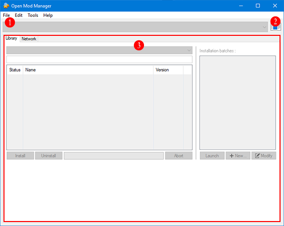

The term Manager refers to the Open Mod Manager software itself and its main window. This chapter review and explain the Manager's base principles, base interface, paramete rs and some technical considerations.
The Manager is the base application and engine which allow to manage what is called Software Context and their related components.
The Software Context is not the purpose of this chapter, it has its own chapter which explain its principle, review its components and related parameters.
Since the Manager is due to apply and manage Mods (modifications) for a third-party softwares (or games), the primary objects it handle are the workspaces related to these third-party softwares, which here, are called Software Context or simply Context. So to say, like an image editor deals with images, Open Mod Manager deals with Software Context.
The Manager can load and manage several Software Context within a single instance. Once loaded each Software Context is accessible via the Software Context selector
Because most features are related to Software Context, the Manager's base interface is very simple and count few elements:

The Context selector holds the list of the currently opened Software Contexts and show the current active one. Several Software Contexts can be opened at the same time, you can switch from one to another easly and quickly by selecting it here.
This is the icon associated with the current active Software Context. Each Software Context can have a specific custom icon associated, usually related to the application it represents.
The manager features are grouped into several big modules related to a specific theme. this tab lists and provides quick access to each of them.
The manager have few global parameters since most of parameters are Context related. To access to the manager global parameters go to the menu Edit and select Manager options...
Edit
⋮
Manager options...
This the main and alone Manager's parameters section.
Defines icons size for all List Views of the application interface. There are three possible sizes:
This parameter allow to define a list of Software Context files which will be automatically opened when application starts. The files must be Context definition files (.omc) whithin their home folder.
The Software Contexts will be opened in the order the files are in the startup list.
The manager stores its global configuration and log files in a folder named Open Mod Manager located according the CSIDL_APPDATA Windows environement variable which, on modern systems is the following local to user application data folder:
C:\Users\<username>\AppData\Roaming\Open Mod Manager\
This is the main application configuration file. It is an human readable UTF-8 encoded XML file. It stores only Manager's global parameters and some software session data.
This is the outup log file which contain the output log of the application last session. This file is erased and recreated each time the application start and quit.